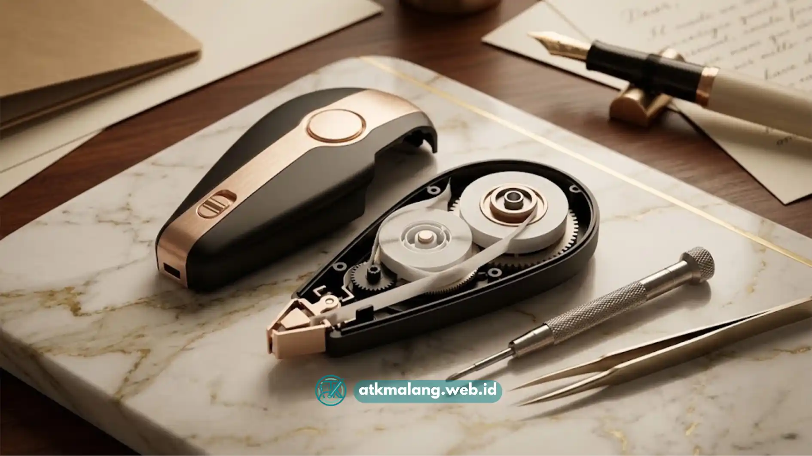

Cara mengatasi correction tape macet adalah dengan membuka casing, memeriksa jalur pita, mengencangkan gulungan, lalu memastikan roda gerigi berputar normal sebelum pita dipasang kembali.
- Correction tape macet umumnya disebabkan oleh pita kendur, gerigi roda kotor, atau pita terlipat di dalam casing.
- Sebagian besar kasus macet ringan bisa diperbaiki sendiri tanpa alat khusus, hanya dengan membuka casing secara hati-hati.
- Pita yang longgar bisa dikencangkan kembali dengan memutar roda penggulung searah jarum jam menggunakan jari atau ujung pena.
- Perawatan rutin seperti menyimpan correction tape secara horizontal dan menghindari tekanan berlebih akan mencegah macet berulang.
- Jika pita sudah putus, kusut parah, atau casing retak, mengganti unit baru Alat Tulis Kantor lebih disarankan daripada terus memperbaiki.
Daftar Isi
- Apa Itu Correction Tape dan Kenapa Bisa Macet?
- Kenapa Pita Correction Tape Sering Longgar Setelah Dipakai Lama?
- Bagaimana Cara Mengatasi Correction Tape yang Macet Total?
- Bagaimana Cara Mengencangkan Pita Correction Tape yang Longgar?
- Apa Saja Kesalahan Umum yang Membuat Correction Tape Cepat Macet?
- Bagaimana Cara Merawat Correction Tape Agar Tidak Mudah Macet?
- Kapan Sebaiknya Correction Tape Diganti Daripada Diperbaiki?
Apa Itu Correction Tape dan Kenapa Bisa Macet?
Correction tape adalah alat tulis berbentuk roller kecil berisi pita film tipis berwarna putih atau krem yang berfungsi menutupi tulisan atau cetakan yang salah pada kertas.
Berbeda dengan correction fluid (cairan tip-ex), correction tape bekerja secara kering sehingga hasil koreksi bisa langsung ditulisi ulang tanpa menunggu kering.
Correction tape bisa macet karena beberapa hal yang saling berkaitan di dalam mekanisme rollernya.
Penyebab paling umum adalah pita yang kendur di dalam gulungan sehingga tidak tertarik rapi saat digunakan, gerigi penggerak yang kotor akibat debu kertas, atau pita yang terlipat dan tersangkut pada bagian ujung kepala aplikator.
Pemakaian yang terlalu ditekan saat menggoreskan tape di kertas juga mempercepat keausan mekanisme dan membuat pita lebih mudah kendur pada produk Alat Tulis Kantor Anda.
Kenapa Pita Correction Tape Sering Longgar Setelah Dipakai Lama?
Pita correction tape menjadi longgar terutama karena gulungan penerima pita (spool kosong) berputar lebih cepat dibanding gulungan sumber, sehingga pita tertarik lebih banyak dari yang seharusnya dan menumpuk longgar di dalam casing.
Kondisi ini wajar terjadi pada correction tape yang sudah sering dipakai atau pernah tertarik paksa saat macet sebelumnya.
Semakin sering pita ditarik secara tidak merata, semakin besar kemungkinan gulungan bergeser dari posisi idealnya.
Correction tape yang sering terjatuh atau tertindih benda berat di dalam tas juga lebih rentan mengalami pita longgar karena tekanan pada casing bisa menggeser posisi roda gerigi bagian dalam.

Gunakan obeng pipih kecil atau alat tumpul untuk mencongkel casing tape secara hati-hati agar tidak pecah.Bagaimana Cara Mengatasi Correction Tape yang Macet Total?
Correction tape yang macet total biasanya bisa diatasi dengan membuka casing menggunakan obeng kecil atau ujung pisau tumpul, memeriksa jalur pita secara manual, lalu meluruskan bagian yang terlipat sebelum menutup casing kembali.
Langkah yang bisa dilakukan secara berurutan:
- Matikan dulu penggunaan tape dan jangan memaksa menarik pita yang tersangkut, karena tarikan paksa justru bisa membuat pita putus.
- Cari sambungan casing correction tape, biasanya berupa klip plastik di sisi kanan dan kiri, lalu buka perlahan menggunakan alat kecil yang pipih.
- Setelah casing terbuka, perhatikan jalur pita dari gulungan sumber menuju kepala aplikator, lalu menuju gulungan penerima.
- Jika ditemukan bagian pita yang terlipat atau menggulung tidak rapi, luruskan dengan hati-hati menggunakan ujung jari, jangan menariknya secara kasar.
- Putar gulungan penerima secara manual searah jarum jam agar pita yang sudah diluruskan tergulung kembali dengan rapi.
- Tutup kembali casing hingga klip terkunci sempurna, lalu uji coba pada kertas bekas sebelum digunakan untuk dokumen penting.
Bagaimana Cara Mengencangkan Pita Correction Tape yang Longgar?
Pita correction tape yang longgar dapat dikencangkan dengan memutar gulungan penerima menggunakan jari atau ujung pena tumpul searah jarum jam hingga pita tertarik rapat tanpa kendur.
Setelah casing terbuka sesuai langkah sebelumnya, cari roda gulungan penerima yang biasanya memiliki celah kecil untuk diputar manual.
Putar secara perlahan dan konsisten agar pita tergulung merata, bukan menumpuk di satu sisi. Hindari memutar terlalu cepat karena bisa membuat pita robek, terutama pada correction tape dengan bahan film yang tipis.
Setelah pita terasa kencang dan rapi, lakukan uji tarik ringan pada aplikator untuk memastikan pita bergerak lancar sebelum casing ditutup kembali dan Anda siap memakainya untuk keperluan Alat Tulis Kantor sehari-hari.
Apa Saja Kesalahan Umum yang Membuat Correction Tape Cepat Macet?
Kesalahan umum yang membuat correction tape cepat macet adalah menekan aplikator terlalu keras saat menggunakan, menarik pita secara paksa saat tersangkut, dan menyimpan correction tape dalam posisi berdiri tegak dalam waktu lama.
Beberapa kebiasaan yang sebaiknya dihindari:
- Menekan kepala aplikator terlalu dalam ke kertas, yang justru membebani mekanisme roda gerigi.
- Menggoreskan correction tape berulang-ulang di titik yang sama tanpa mengangkat aplikator.
- Membiarkan correction tape terkena debu kertas dalam waktu lama tanpa dibersihkan.
- Menyimpan correction tape bercampur dengan benda tajam seperti gunting atau cutter di dalam laci yang sama.
- Menggunakan correction tape dengan kualitas pita yang terlalu tipis untuk pemakaian intensitas tinggi.
Bagaimana Cara Merawat Correction Tape Agar Tidak Mudah Macet?
Correction tape akan lebih awet dan tidak mudah macet jika disimpan dalam posisi mendatar, dibersihkan dari debu kertas secara berkala, dan digunakan dengan tekanan ringan yang konsisten.
Simpan correction tape di tempat yang tidak terkena suhu panas berlebih, karena panas dapat membuat lem pada pita menjadi lengket dan menempel pada bagian dalam casing.
Bersihkan kepala aplikator dari sisa kertas atau debu menggunakan kuas kecil atau tisu kering setiap beberapa kali pemakaian.
Saat menggunakan, tarik correction tape dengan gerakan mantap satu arah, bukan bolak-balik, agar pita tidak tertekuk pada bagian aplikator.
Kapan Sebaiknya Correction Tape Diganti Daripada Diperbaiki?
Correction tape sebaiknya diganti dengan unit baru apabila pita sudah putus di beberapa titik, casing retak sehingga tidak bisa menutup rapat, atau hasil koreksi pada kertas sudah tidak lagi menutup tulisan secara sempurna.
Memperbaiki correction tape yang macet memang bisa menghemat pengeluaran untuk pemakaian jangka pendek, namun correction tape yang mekanismenya sudah terlalu sering dibongkar pasang biasanya akan lebih rentan macet kembali dalam waktu dekat.
Untuk kebutuhan pekerjaan yang mengandalkan hasil koreksi rapi secara konsisten, seperti dokumen resmi atau ujian, memilih untuk mengganti unit correction tape lebih disarankan dibanding terus memperbaiki unit lama yang mekanismenya sudah aus.
Correction tape yang macet atau pitanya longgar pada dasarnya bisa diatasi sendiri dengan membuka casing secara hati-hati, meluruskan pita yang terlipat, dan mengencangkan gulungan penerima secara manual.
Kebiasaan menyimpan dan menggunakan correction tape dengan benar akan sangat membantu mencegah masalah ini terjadi berulang kali.
Jika kerusakan sudah pada tahap pita putus atau casing pecah, mengganti dengan correction tape baru yang berkualitas adalah pilihan yang lebih praktis dan aman untuk hasil koreksi yang rapi.